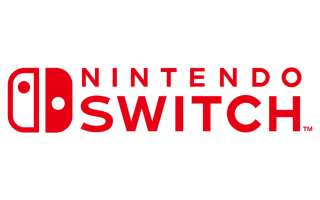

Nintendo 64 es una consola de videojuegos desarrollada por Nintendo y lanzada en 1996. Es conocida por ser la primera consola de 64 bits, lo que le permitió ofrecer gráficos 3D avanzados para su época. Aquí tienes una descripción detallada: Diseño y Hardware Carcasa: La Nintendo 64 tiene un diseño bastante distintivo, con una forma rectangular y un acabado en plástico que varía según el modelo. Originalmente, se lanzó en colores como el negro, el gris y el transparente.
Nintendo Switch es una consola de videojuegos híbrida lanzada por Nintendo en marzo de 2017. Su diseño innovador permite jugar de tres maneras: en modo portátil, en modo consola de mesa con un soporte integrado, y en modo sobremesa conectada al televisor mediante una base. Portátil: Los jugadores pueden utilizar la Switch como una consola portátil con su pantalla táctil de 6.2 pulgadas y controles desmontables llamados Joy-Con. Modo de mesa: Se puede usar en modo mesa apoyada en su base con los Joy-Con acoplados o separados, ideal para juegos en grupos pequeños. Conectada al televisor: Al colocar la Switch en la base, se puede jugar en el televisor en alta definición.